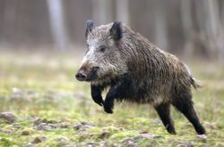
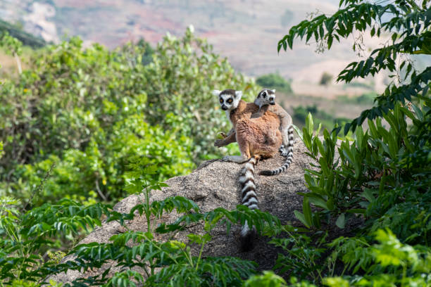

Zavatra Sarobidy
Ireo Biby Any Behasy sy Vohipolo
Ny Aomby
Na any Behasy na any Vohipolo, aomby no tena fanta-daza. Any Behasy dia maro sy matanjaka kokoa ireo aomby, mitondra lanja ara-toekarena ho an’ny mponina.
Amin'ny maha-zava-dehibe azy, manampy amin'ny asa fambolena ny aomby, manampy amin'ny fanamafisana ny tany sy ny fitazonana ny rano, izay mitondra vokatra ara-pambolena betsaka.
Azo amidy ihany koa izy ireo, manampy amin'ny fivelomana sy manatsara ny toekarena any an-toerana.
Ny Lambo
Ny lambo dia biby manan-danja amin’ny kolontsaina sy ny endriky ny faritra Behasy sy Vohipolo. Na dia tsy manampy ara-toekarena aza izy ireo, dia ampiasaina amin'ny famoronana endrika manokana.
Manampy amin'ny fisehoan'ny tontolo iainana izy ireo, fa tsy mahita vokatra ara-toekarena lehibe toy ny aomby.
Ny Akanga
Akanga dia biby kely izay manampy amin'ny fifehezana ny fitomboan'ny zavamaniry, ary miasa ho an'ny rafitra ekosisteman'ny faritra. Mitondra anjara biriky lehibe amin'ny fitazonana ny fifandanjana ara-eko-sistémika izy ireo.
Ny Maky
Ny maky dia biby manan-danja amin'ny tontolo iainana sy kolontsaina, miaraka amin'ny lanjany lehibe amin'ny fizahantany sy ny fiparitahan’ny voa amin'ny ala. Vitsy an'isa izy ireo amin’izao fotoana izao noho ny fiovaovan’ny toetr’andro sy ny fandripahana ala.
Ankoatra ny fahendrena ara-kolontsaina sy ny maha-sarobidy azy ireo amin'ny fomba fiaina ao Behasy sy Vohipolo, dia manampy amin'ny fahaiza-manao manampy ny fandraharahana sy ny fanombohana ara-tsosialy.
Ireo Zavamaniry Any Behasy sy Vohipolo
Ny Vary

Ny vary dia sakafo fototra ao Behasy sy Vohipolo, manampy amin'ny toekarena sy amin'ny fiainan'ny mponina. Miantoka ny fivelomana sy ny asa ny fambolena vary amin’ireo faritra ireo.
Ny Fary
Ny fary dia manampy amin’ny fanamboarana siramamy gasy sy toaka gasy. Manampy amin’ny fivelomana sy ny fampandrosoana ny faritra amin’ny alalan’ny famarotana sy asa momba ny fambolena.
Ny Manga

Ny manga dia manan-danja amin'ny fahasalamana sy ny toekarena, manampy amin'ny fandrahoana sakafo sy fivarotana. Ampiasaina amin'ny sakafo sy zava-pisotro, izay manampy amin'ny fivelomana sy ny toekarena eo an-toerana.
Ny Goavy
Ny goavy dia voankazo manan-danja amin'ny fahasalamana sy ny toekarena, manampy amin'ny fiarovana ara-pahasalamana ary manintona mpizahatany. Mivelona amin'ny toetr'andro tropikaly sy mora volena amin'ny tany rehetra.
Famintinana
Ny zavamaniry sy biby any Behasy sy Vohipolo dia manan-danja amin'ny fiainana ara-tontolo iainana, kolontsaina, ary ara-toekarena. Ireo harena voajanahary ireo dia manampy amin’ny fivelomana, fampandrosoana, ary ny fanatsarana ny toe-karena. Miaro sy mitahiry izany harena izany dia manampy amin’ny fiainana maharitra sy ny fanandratana ny kolontsaina.